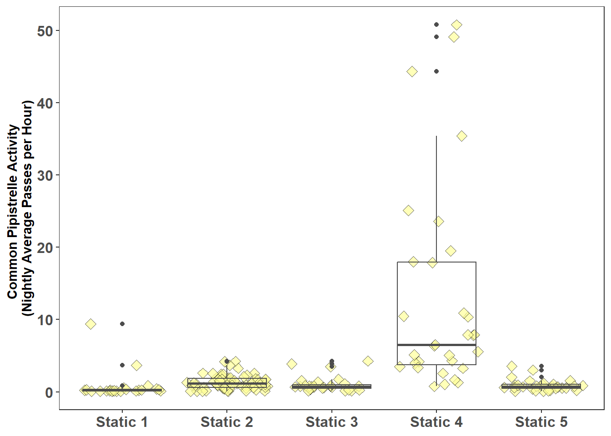

Statistical modeling is a method of mathematically approximating the world.
Comparison of Activity
An Obvious Difference
The statics data in the iBats package has some interesting Barbastelle (Barbastella barbastellus) bat activity, it would be interesting and aid our understanding if we compare the activity between static locations and see if they are significantly different.
Before undertaking any statistical test always visualise the data the statistical test is applied to. Barbastelle has been recorded at several locations see Figure 1.
The average bat pass rate per hour can been calculated for each night and each static location using the formula:
Where: Batpasses = number of bat pass during the night at the location Nightlength = length of the night in decimal hours AverageActivity = average (mean) number of bat passes per hour for each night there was activity
Show the code
# Add data and time information to the statics data using the iBats::date_time_infostatics_plus <- iBats::date_time_info(statics)# Add sun and night time metrics to the statics data using the iBats::sun_night_metrics() function.statics_plus <- iBats::sun_night_metrics(statics_plus)graph_data <- statics_plus %>%filter(Species =="Barbastella barbastellus") %>%group_by(Description, Night, night_length_hr) %>%# count number of passes per night by species - makes coloumn "n""tally() %>%# calculate average bat passes per hour for each Night and speciesmutate(ave_act_per_hr = n / night_length_hr) %>%# Remove Night Length column from the Tableselect(-night_length_hr, -n) ggplot(graph_data, aes(y = ave_act_per_hr, x = Description)) +geom_jitter(fill ="#1f78b4", #Barbastelle colourcolour ="black", shape =23, alpha =0.7, size =3) +geom_boxplot(colour ="grey30", fill ="transparent") +labs(y ="Barbastelle Activity \n(Nightly Average Passes per Hour)") +theme_bw() +theme(legend.position ="none", # No legendaxis.text.x =element_text(size=12, face="bold"), axis.text.y =element_text(size=12,face="bold"), axis.title.y =element_text(face="bold"), axis.title.x =element_blank(), # no y title (just bat names)panel.grid.major =element_blank(), #remove grid linespanel.grid.minor =element_blank())
Figure 1: Barbastelle Activity at Each Static (Nightly Average Passes per Hour)
The comparison of locations is undertaken with the Mann-Whitney-Wilcoxon or Kruskal-Wallis test. The Kruskal–Wallis test is a rank-based test that is similar to the Mann-Whitney-Wilcoxon test but can be applied to one-way data with more than two groups. If there are just two locations the Mann-Whitney-Wilcoxon test is applied. The Kruskal–Wallis test may be used when there are only two samples, but the Mann-Whitney-Wilcoxon is more powerful for two samples and is preferred. Both tests assume that the observations are independent. The probability threshold for statistical significance, which should always be chosen before the test is undertaken, is: P < 0.05.
The Null Hypothesis: bat pass rates per hour are from distributions with the same median.
The Alternative Hypothesis: bat pass rates per hour are from distributions with a different median.
The function kruskal.test, from base R, is used to undertake the Kruskal-Wallis test. A rule of thumb for the Kruskal–Wallis test is each group, (in this case case the number of nightly average bats pace vales for each static location) must have a sample size of 5 or more.
Show the code
# Add data and time information to the statics data using the iBats::date_time_infostatics_plus <- iBats::date_time_info(statics)# Add sun and night time metrics to the statics data using the iBats::sun_night_metrics() function.statics_plus <- iBats::sun_night_metrics(statics_plus)test_data <- statics_plus %>%filter(Species =="Barbastella barbastellus") %>%group_by(Description, Night, night_length_hr) %>%# count number of passes per night by species - makes coloumn "n""tally() %>%# calculate average bat passes per hour for each Night and speciesmutate(ave_act_per_hr = n / night_length_hr) %>%# Remove Night Length column from the Tableselect(-night_length_hr, -n)# Check at least 2 locations and a minimum of 5 observations per location# Only do KW on locations with 5 or more observations# if just two locations do Mann Whitneycheck_data <- test_data %>%group_by(Description) %>%tally()# filter for Statics with more than 5 valuesStaticsWithPlus5 <- check_data %>%filter(n >=5) %>%pull(Description)test_data <- test_data %>%filter(Description %in% StaticsWithPlus5)# Extract the p-value from the kruskal.teststat_pvalue <-kruskal.test(ave_act_per_hr ~ Description, data = test_data)$p.value
With reference to Figure 1 there are several static locations where the activity can be compared, this is more than two locations, therefore the Kruskal-Wallis test is undertaken rather than the Mann-Whitney-Wilcoxon test. Location 1 with only three results is excluded from the test.
The Kruskal-Wallis test undertaken for the Barbastelle at the following static locations: Static 2, Static 3, Static 4, and Static 5 produced a P value (9.17e-08) less than the chosen threshold for statistical significance of 0.05; therefore the null hypothesis is rejected, activity between some static locations is likely to be different.
What the Kruskal-Wallis test does not indicate, is which static locations are different; to determine this we need to undertake post hoc testing, this can be undertaken with the Dunn’s Test.
Results of the Dunn’s test, performed after the Kruskal-Wallis test (post hoc), are shown in Table 1.
Show the code
df <-tibble(dunn_result$comparisons, dunn_result$P.adjusted)colnames(df) <-c("Comparison", "P.adj")resultsTable <- df %>%filter(P.adj <0.05) %>%select(`Locations with a significant difference (P<0.05)`= Comparison, `adjusted P `= P.adj)resultsTable %>%flextable(col_keys =colnames(.)) %>%fontsize(part ="header", size =12) %>%fontsize(part ="body", size =12) %>%bold(part ="header") %>%autofit(add_w =0.1, add_h =0.1) %>%bg(bg ="black", part ="header") %>%color(color ="white", part ="header") %>%align(align ="center", part ="header") %>%align(j =2, align ="right", part ="body") %>%bold(j =1, bold =TRUE, part ="body")
Table 1: Results of Post-hoc testing with the Dunn’s Test
Locations with a significant difference (P<0.05)
adjusted P
Static 2 - Static 4
0.0000002372373
Static 3 - Static 4
0.0004837731033
Static 4 - Static 5
0.0013231129871
The Dunn’s Test carries out multiple comparisons therefore a P value adjustment needs to be made to avoid a false significant result. For this P value adjustment the Bonferroni method is applied; a simple technique for controlling the overall probability of a false significant result when multiple comparisons are to be carried out.
Table 1 gives the results of the post hoc testing with the Dunn’s test and shows that Barbastelle activity at Location 4 is significantly different (at P<0.05) to activity at Locations 2, 3, and 5.
The statistical tests show that Barbastelle bat activity recorded at Location 4 is significantly different; this knowledge is evidence based and can be stated with confidence when reporting.
Less Obvious Difference
Figure 2 shows Common pipistrelle activity for the static locations comparison of activity can be undertaken with the Kruskal-Wallis test with the following hypothesis:
The Null Hypothesis: bat pass rates per hour are from distributions with the same median.
The Alternative Hypothesis: bat pass rates per hour are from distributions with a different median.
Show the code
# Add data and time information to the statics data using the iBats::date_time_infostatics_plus <- iBats::date_time_info(statics)# Add sun and night time metrics to the statics data using the iBats::sun_night_metrics() function.statics_plus <- iBats::sun_night_metrics(statics_plus)graph_data <- statics_plus %>%filter(Species =="Pipistrellus pipistrellus") %>%group_by(Description, Night, night_length_hr) %>%# count number of passes per night by species - makes coloumn "n""tally() %>%# calculate average bat passes per hour for each Night and speciesmutate(ave_act_per_hr = n / night_length_hr) %>%# Remove Night Length column from the Tableselect(-night_length_hr, -n) ggplot(graph_data, aes(y = ave_act_per_hr, x = Description)) +geom_jitter(fill ="#ffff99", #Common Pipistrelle colourcolour ="black", shape =23, alpha =0.7, size =3) +geom_boxplot(colour ="grey30", fill ="transparent") +labs(y ="Common Pipistrelle Activity \n(Nightly Average Passes per Hour)") +theme_bw() +theme(legend.position ="none", # No legendaxis.text.x =element_text(size=12, face="bold"), axis.text.y =element_text(size=12,face="bold"), axis.title.y =element_text(face="bold"), axis.title.x =element_blank(), # no y title (just bat names)panel.grid.major =element_blank(), #remove grid linespanel.grid.minor =element_blank())

Figure 2: Common Pipistrelle Activity at Each Static (Nightly Average Passes per Hour)
Show the code
# Add data and time information to the statics data using the iBats::date_time_infostatics_plus <- iBats::date_time_info(statics)# Add sun and night time metrics to the statics data using the iBats::sun_night_metrics() function.statics_plus <- iBats::sun_night_metrics(statics_plus)test_data <- statics_plus %>%filter(Species =="Pipistrellus pipistrellus") %>%group_by(Description, Night, night_length_hr) %>%# count number of passes per night by species - makes coloumn "n""tally() %>%# calculate average bat passes per hour for each Night and speciesmutate(ave_act_per_hr = n / night_length_hr) %>%# Remove Night Length column from the Tableselect(-night_length_hr, -n)# Check at least 2 locations and a minimum of 5 observations per location# Only do KW on locations with 5 or more observations# if just two locations do Mann Whitneycheck_data <- test_data %>%group_by(Description) %>%tally()# filter for Statics with more than 5 valuesStaticsWithPlus5 <- check_data %>%filter(n >=5) %>%pull(Description)test_data <- test_data %>%filter(Description %in% StaticsWithPlus5)# Extract the p-value from the kruskal.teststat_pvalue <-kruskal.test(ave_act_per_hr ~ Description, data = test_data)$p.value
The Kruskal-Wallis test undertaken for the Common pipistrelle at the following static locations: Static 1, Static 2, Static 3, Static 4, and Static 5 produced a P value (3.30e-16) less than the chosen threshold for statistical significance of 0.05; therefore the null hypothesis is rejected, activity between some static locations is likely to be different. The Dunn’s test can be applied to determine the static locations that are different.
Results of the Dunn’s test, performed after the Kruskal-Wallis test (post hoc), are shown in Table 2.
Show the code
df <-tibble(dunn_result$comparisons, dunn_result$P.adjusted)colnames(df) <-c("Comparison", "P.adj")resultsTable <- df %>%filter(P.adj <0.05) %>%select(`Locations with a significant difference (P<0.05)`= Comparison, `adjusted P `= P.adj)resultsTable %>%flextable(col_keys =colnames(.)) %>%fontsize(part ="header", size =12) %>%fontsize(part ="body", size =12) %>%bold(part ="header") %>%autofit(add_w =0.1, add_h =0.1) %>%bg(bg ="black", part ="header") %>%color(color ="white", part ="header") %>%align(align ="center", part ="header") %>%align(j =2, align ="right", part ="body") %>%bold(j =1, bold =TRUE, part ="body")
Table 2: Results of Post-hoc testing with the Dunn’s Test
Locations with a significant difference (P<0.05)
adjusted P
Static 1 - Static 2
0.0000939731690135662070
Static 1 - Static 3
0.0460478959637407314620
Static 1 - Static 4
0.0000000000000007857217
Static 2 - Static 4
0.0000001079868368327319
Static 3 - Static 4
0.0000000296352155723235
Static 4 - Static 5
0.0000000014826746844802
Table 2 gives the results of the post hoc testing with the Dunn’s test; post P value adjustment with the Bonferroni method showing:
Common pipistrelle activity at static 4 is significantly different (at P<0.05) to all the other static locations.
Common pipistrelle activity at static 1 is significantly different to static locations 2, 3 and 4. The significant difference (at P<0.05) between static 1 and static 3 is not easily determined from Figure 2.
Common pipistrelle activity at static 2, static 3, and static 5 are not significantly different (at P<0.05).